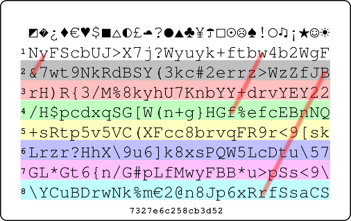
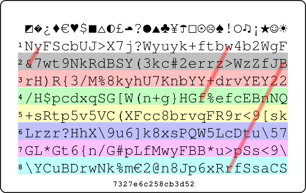

The Mathematics of Passwords
| Author: | Aaron Toponce |
|---|---|
| Email: | aaron.toponce@gmail.com |
| PDF: | http://ae7.st/s/bi |
| Date: | 2014-10-21 |
License
This presentation is licensed under the Creative Commons Attribution-ShareAlike license.
See http://creativecommons.org/licenses/by-sa/3.0/ for more details.
This document is licensed under the CC:BY:SA Details to the license can be found here: http://creativecommons.org/licenses/by-sa/3.0/
- The licnese states the following:
- You are free to copy, distribute and tranmit this work.
- You are free to adapt the work.
- Under the following conditions:
- You must attribute the work to the copyright holder.
- If you alter, transform, or build on this work, you may redistribute the work under the same, similar or compatible license.
- With the understanding that:
Any conditions may be waived if you get written permission from the copyright holder.
- In no way are any of the following rights affected by the license:
- Your fair dealing or fair use rights;
- The author's moral rights;
- Rights other persons may have either in the work itself or in how the work is used, such as publicity or privacy rights.
For any reuse or distribution, you must make clear to others the license terms of this work. The best way to do this is with a link to the web page provided above or below.
The above is a human-readable summary of the license, and is not to be used as a legal substitute for the actual licnse. Please refer to the formal legal document provided here: http://creativecommons.org/licenses/by-sa/3.0/legalcode
Overview
- Cryptanalysis
- Password structures
- Strength qualities
- Entropy
- Implementations
The structure of the presentation will be as follows:
Cryptanalysis: In order to understand what a "strong password" is, we need to understand what software is used and how it is used to attack passwords. This will help us get a handle on what qualifies a password as strong versus weak.
Password structures: We'll cover how passwords are stored in databases, hard drives, and mediums. We'll cover passwords stored in plain text, verses hashed passwards, versus salted passwords. Briefly.
We'll also take what we learned about how they are stored, and start looking at the numbers and combinations of passwords. This will prepare us for learning about entropy, which is coming up. We'll also add rainbow tables to the mix, and why salted passwords increase the strength of your password.
Strength qualities: After analyzing how to attack passwords, we can get a sense of what makes passwords strong versus weak. We learn quickly that length becomes a key factor as well as adding different character sets to the password.
Entropy: This is to cover the amount of work it takes for an attacker to gett access to your account if he knows your username, and is only guessing your password. We'll see how length adds much more entropy to a password than just adding random characters. We'll run some numbers on the time it would take to crack these passwords.
Implementations: We'll look at some various password managers and how you can keep your password safe, while easily accessible at the same time.
Password Requirements
- "Strong" (whatever that means)
- Easy to remember
- Unique for each account
- Stored securely
We're told that we need to make our passwords "strong", but defining what "strong" means seems to confuse people. Some will say that a strong password is a long password. Others might say that a password uses a combination of lowercase and uppercase letters, numbers and punctuation. Others, maybe more anal retentive, will say a strong password is one that is built entirely off random characters.
Needless to say, I think we can do better, and we will. Later on, we'll quantify exactly what it means to have a "strong" password
Having a "strong" password and one that is easy to remember seem to conflict each other. The reason for this seems obvious. If I generate a "strong" password, then in becomes more difficult to remember. The stronger the password it semes, the harder it is to recall from memory. So naturally, we want to keep our password easy to remember, so we sort of compromise on the strength of the password to accomplish this aim.
Case in point, and part of the motivation for developing password theory; I had a friend who is in the computer science field. He's even a mathematician here at Weber State. Recently, he had his Gmail account compromised by an attacker. The attacker was able to crack his password, and take out the account. The reason the attacker got the password was because it wasn't "strong", but instead, easy to remember. It was a valuable lesson to him to change his password strength, not only for Gmail, but for the other accounts he had.
Hopefully, I'll be able to show that by the end of this presentation, you can have both a very strong password, and one that's easy to remember.
Of course, if a password does get access to the password for our account, the last thing we want him to have access to is our bank account, or other accounts that we might consider a sensitive nature.
So, it's a good idea to create a unique password for each account that we have. However, this also seems to be in disagreement with having passwords that are easy to remember. I'm sure each of us have many accounts that we interface with. Is it easy to remember which password goes with which account? It might be if we interface with those accounts daily, but what about the accounts that we only access once a month, or even less than that? Forgotten passwords are very common.
At least having an unique password for each account guarantees that if one account gets compromised, the others won't be with that same password. Again, hopefully I'll be able to show that not only can you have a "strong" password that's easy to remember, but it will be easy to remember "strong" passwords for every account you have.
In reality, passwords are only as secure as their storage, with the most secure storage being your brain. However, you can write passwords down in a secure manner. You could have an encrypted database with one single master password that contains all your account passwords. Unless someone knows the master password, they won't get access to the others. You could also store your passwords in your wallet or purse, as these items are likely the most tracked items in your possession, minus maybe your kids.
There are all sorts of implementations, both software and hardware, for storing your passwords securely, and it can be done. We'll look at only one method at the very end of this presentation for securely storing your passwords.
Cryptanalysis
- Hashing plain text
- Rainbow tables
- Salted password
- Key stretching
- Shadowed password
- John the Ripper
In order to get some sort of sense on what makes a password "strong", we need to look at the amount of effort it takes to attack a password from a cryptanalysis point-of-view.
Cryptanalysis is a branch of cryptography that studies breaking down encrypted data without the access to the secret algorithms that were used to generate that encrypted data. These methods use a variety of algorithms and theoris, such as birthday attacks, rainbow tables (of which we'll talk about here), boomerang attacks, brute force attacks and other methods.
By analyzing some of the cryptanalysis methods used to attack and recover passwords from encrypted means will help us get a handle on the hardware and software implementations needed to make these attacks practical, which means we might get a better understanding what it means to have a "strong" password.
Hashes are one-way algorithms with take any form of data, and produce a unique hexadecimal string of characters. If the same data is provided to the hashing algorithm, the same hexadecimal string with always be produced. This means that there is a one-to-one relationship with the data and the hash.
Hashes are also one-way, meaning that it's trivial to create the hash, but we can't go in reverse. In other words, we can't take a hash, and reproduce the data that created it. An analogy to this would be creating pie crust. It takes water, flour, sugar and other ingredients. It's easy to create the dough, and eventually the crust by mixing the ingredients, but it's near impossible to take a crust, and reduce it to the ingredients necessary to create it. This is partly due to evaporation of water during heating in the oven, chemical bonding, and other factors.
Because the relationship to the data and the hash is one-to-one (1:1), this means we could create a database of text that produces the unique hash. Although we can't reverse the hash into the data, we can look up the hash in the database, and if we find a match, then we know what the data is that produced the hash. These databases are known as rainbow tables. You can find many large and small rainbow tables on the Internet.
In order to work around tables, passwords are salted. Suppose a password is 8 characters long. It contains exactly one unique hash. However, what if we were to add a "salt" to the password string. Suppose the password salt is 6 characters in length and that the salt is based on a 64-character set. Then, this means that the password could produce 64^6 possible hashes. This would make our rainbow table 64^6 times as large.
64^6 = 68719476736
If all we have access to is the hash, and not the salt, then we have a 64^6 possible combinations to search through with the salt, assuming it is indeed 6 characters long, to find the right password that produced that hash. This makes rainbow tables infeasible.
Unfortunately, cryptographically secure one-way hashing functions are designed to be fast. They are designed to be secure, but they are also designed to be fast. As such, this plays to the advantage of the password cracker. A simple laptop computer might be able to guess 1 million passwords per second. It would be nice if we could slow this down a bit.
Key based derivation functions solve this by being computationally expensive to derive the key. If my laptop can work through 1 million SHA1 hashes per second, I might be able to only work through 20,000 bcrypt keys. So, some knowledgable of password cracking advocate the use of PBKDF2, scrypt(), and bcrypt(). However, you can greatly slow down password cracking with one-way hash functions by using key stretching.
Key stretching is the idea that I take a hash of the password, then hash that result. I continue in a recursive manner, hashing the new output, until X number of times, say 5,000. So, if my wimpy laptop can do 1 million SHA1 hashes at the fastest, if I require a key stretching of 5,000 rounds, then my laptop must work through 5,000 hashes per password. This reduces my effectivenees to 200 passwords per second. Key stretching is a great way to slow down the password cracker.
GNU/Linux supports changing the number of rounds with PAM. By default, passwords stored with MD5 are rotated 1,000 times, and passwords stored with SHA256 or SHA512 are rotated 5,000 times on GNU/Linux. Mac OS X, and the BSD family of operating systems, uses bcrypt() for its password storage.
Further, many passwords in databases and operating systems are "shadowed". This means that only the database or operating system administrator will have access to the salted password hash. This keeps prying eyes of regular system users away from attempting to attack the hash, and find the password that produced it. We assume that the database and operating system administrators can be trusted, due to the nature of their job.
If we can get access to a shadowed password, then we will also likely have access to the salt. This means that we've got enough data to begin searching for a string of data that produces the hash (combined with the salt appropriately, of course). One such tool to do this is John the Ripper. John the Ripper takes an "unshadowed" file, that is the username, the salt, and the hashed password, along with some other metadata, to begin attacking the password. It does so through brute force.
John the Ripper reads a database of words to attack from, or it can start using incremental mode. The "database" of words can be a regular text file with one word per line, that is commonly used in spell checker programs to assure spelling accuracy. You can also supply options to John to reduce the search space, such as restricted character sets, suspected password length, and potential dictionary databases to search from.
John the Ripper is designed to be fast. It can take advantage of multiple cores in your CPU, to linearly increase the speed. On my 16 core system at work, I can achieve a speed of 192,000 passwords per second. With a cluster of 20 machines, with 16 cores a piece, this means I can achieve a speed of 3,840,000 passwords per second.
For an 8-character password, this means at this pace, it would take 59 years at most to find the right key, combined with that salt, to match the hash given in the shadowed password database. We'll talk more about this in a bit.
Some Hashes
- Using the MD5 hash algorithm
- foo - d3b07384d113edec49eaa6238ad5ff00
- Foo - cbd8f7984c654c25512e3d9241ae569f
- goo - 7361528e901ca2f2f1952a68ad242d79
Above is an example of the text 'foo' hashed with the MD5 hashing algorithm, compared to hashing 'Foo' and 'goo'. Notice how all the hashing strings are radically different from one another. The difference of letter case matters, as can be seen with 'f' and 'F'. However, the capital letter f compared to the lowercase latter are several bytes apart, as far as the computer is concerned. However, the letter g is one byte different from the letter f, so you would expect the hash to be much more similar, but it's just as radically different.
As mentioned with hashing algorithms, they are one way functions, meaninig that it's asy to take any stream of data, binary or otherwise, and get a hash from that stream. However, it should be impossible, or highly improbably, to reverse the hash into the originating data.
Further, hashes should be computationally secure, meaning that it should be able to stand against cryptanalysis attacks and there should be no collisions in the hash. A collision is given, when many different streams of data provide the same hash. Of course collisions will occur, due to the infinite nature of the data, and the finite nature of the hash output. However, the MD5 algorithm can produce 5,444,517,870,735,015,415,413,993,718,908,291,383,296 unique hashes. This should be large enough to avoid unnecessary or frequent collisions.
Of course, MD5 is horribly broken, but we are using it as an example here. Other hashing algorithms increase the search space substantially, and some of the more common hashes are given below.
Common Hash Algorithms
- 128-bit: MD2, MD4, MD5, RIPEMD-128
- 160-bit: SHA1, RIPEMD-160
- Others: SHA224 SHA256 SHA384 SHA512
- SHA3 (Keccak)
Most 128-bit hashes have been shown that computationally feasible cryptanalysis can reduce the search space significantly enough to make attacks practical. While MD5 is broken, RIPEMD-128 is still considered strong enough. Most security experts will advise using at least 160-bit or stronger hashing algorithms. The number of unique hashes (the total search space) of each hash is given below:
MD5: 5.44E40 SHA1: 2.34E50 SHA224: 4.31E69 SHA256: 1.85E79 SHA384: 6.30E117 SHA512: 2.15E156
Example of a shadowed password
- root:$1$NSESuz4A$22uWH1mOPnka4zTdnx3jx1
This is an example of a shadowed password from the root account on a Unix server. Each field in the line is separated by a colon. Thus, we can break don the line as follows:
root $1$NSESuz4A$22uWH1mOPnka4zTdnx3jx1
The only data we're going to concern ourselves with is the password string:
$1$NSESuz4A$22uWH1mOPnka4zTdnx3jx1
The password is further divided into subfields separated by dollar signs. Let's look at each one:
1 - Tells us the MD5 hashing algorithm is used for the hash. NSESuz4A - Is the salt used with the password for the algorithm. 22uWH1mOPnka4zTdnx3jx1 - The actual hash of the salted password.
As you can see, the salt is 8 characters in length. On Unix-like systems, the salt uses a character base of [a-zA-z0-9./]. This means there are a total of 64 possible characters that each element in the salt can be. So, the salt added with the password could produce 64^8 or 281,474,976,710,656 total passwords.
John the Ripper
- http://www.openwall.com/john/
- Available for Windows, Mac OS X, GNU/Linux and UNIX
- Free of charge
- Free and Open Source Software
- Wordlists available in 20+ languages containing 4 million entries
- Supports multiple processors
John the Ripper is a utility for cracking passwords. It takes a wordlist and an unshadowed password dababase file, and attempts to recover the password by hashing the entries in the word list and matching them to the entry in the unshadowed password file.
As we already discovered, the shadowed password contains a bit of information. It shows is the hashing algorithm used to create the hash, it gives us the salt that is combined with the password, and of course it gives us the hashed password.
When john gets an entry from the wordlist, it looks for the hashing algorthim it needs to use on this account, grabs the salt, combines the salt and the wordlist entry together, hashes the combined result, and compares that hash to what is in the unshadowed file. If the hash matches, then we have found our password. If it doesn't match, then we continue working our way through the wordlist in a like manner until we find a match.
If we exhaust the word list and haven't found a match, then john will go into incremental mode, meaning it will start with 'a' then 'b' through 'z', then try 'aa', 'ab' through 'zz', then 'aaa' etc until a match has been found.
John can take advantage of a multiple CPU/core system. It's trivial to have one CPU/core work on one wordlist, a different CPU/core work on a different wordlist, etc. Hashing the text is the most computationally intensive operation, so you could have different CPUs/cores working on hashing texts of different lengths. John is very configurable, with many more options, to speed up the process for searching for passwords.
Wordlists can be obtained from the developers of John the Ripper. Relatively small wordlists are given away for free, while a nominal charge is required for larger wordlists. Other wordlists aronud the Internet could be found, the largest of which might contain 2-3 million entries. Of course, your operating system likely already ships with a wordlist that spellcheckers use as their dictionary database. Check the documentation for your operating system for more information.
Passwords From Weak to Strong
- Dictionary words
- Number appended
- Predictable sequences (from keyboard, etc.)
- Predictable "l33t" speak
- Personal data
- Mnemonics (BBslwys90!?)
- Random base-95 strings
Some points to address in this list. Obviously, we covered why dictionary words are a bad idea, words with numbers appended, predictable sequences, such as from the keyboard or repeating characters and words in the password and even predictable "l33t" speak doesn't award you much strength.
The only item in that list that would deserve some mention are Mnemonics, such as BBslwys90!? from B1gbRother|$alw4sriGHt!t?. Notice that we substituted "90", a right angle, for the word "riGHt". If used correctly, this creates a random string of characters that are meaninful to you, but the attacker would not be able to guess. These need to be used with care, as common phrases turned to mnemonics could be easy to guess.
Entropy
- Total possible number of states a password can be in.
- Represented in base-2.
- Increasing the entropy of a password increases its strength.
Entropy comes from information theory, where entropy is a measure of the uncertainty of the random variable. In essence, entropy quantifies the expected value of information contained in a message.
For example, a fair coin has a entropy value of one bit. However, if the coin is not fair, then the expected value is lower, due to the uncertainty being lower. The entropy of a coin flip is given by the binary entropy function.
Calculating Entropy
- Comes from the total possible combinations: y = b^x
- Defined as: H = L*log2(N) = L*log(N)/log(2)
- H = number if bits in base-2
- L = length of the message
- N = number of possible symbols in the password
- See table in handout
Calculating entropy comes from calculating the total number of combinations giving a set of objects and a length. For example, suppose you want to generate a password with 8 characters using only lowercase alphabetic characters. Then you have;
_ _ _ _ _ _ _ _ = 26*26*26*26*26*26*26*26 = 26^8 = 208,827,064,576
As such, there are approximately 208 billion total passwords using only lowercase alpahbetic characters of 8 characters in length.
However, how unpredictable could each password be from the other? This is measured in bits, and we need to do some maths. Let y = possible combinations, b = each individual character, and x = length of the password. Then:
y = b^x
Easy enough. Let's manipulate it a bit. Taking the log of base-b on both sides gives us:
log_b(y) = x
Using a property of logarithms, we can change the base. Because Claude Shannon defined entropy in binary bits, or base-2, we get:
log_b(y) = log_2(y)/log_2(b) = x
So, going back to our example of an 8 character string with only alphabetic characters, we get:
log_26(y) = log_2(y)/log_2(26) = 8
Thus:
log_2(y) = 8 * log_2(26)
Let H = log_2(y), or our entropy estimate. Then:
H = 8 * log_2(26) = 8 * log(26)/log(2)
Or, generically speaking:
H = L*log2(N) = L*log(N)/log(2)
where H is the resultant entropy of the password given in binay bits, L is the length of the password and N is the number of possible symbols in the password.
For example, the password BBslwys90!? has a length of 11. It also uses characters from the lowercases character set, uppercase character set and the number and "special character" character sets. So, N=94, in this case. Thus 11*log2(94)=72. This password has an entropy of 72 binary bits.
What this means is that a brute force password cracking utility would have a search space of 2^72 or 4,722,366,482,869,645,213,696 possible passwords to search through for a 72-bit entropy password. Of course, understanding probability means that the utility won't have to search every password in the search space. It should stop when the password is found, even if there are more passwords remaining.
Consider the following table:
| Entropy (H) | Numbers | Alphabet | Alphanumeric | All ASCII characters |
|---|---|---|---|---|
| 32 | 10 | 6 | 6 | 5 |
| 40 | 13 | 8 | 7 | 7 |
| 64 | 20 | 12 | 11 | 10 |
| 80 | 25 | 15 | 14 | 13 |
| 96 | 29 | 17 | 17 | 15 |
| 128 | 39 | 23 | 22 | 20 |
| 160 | 49 | 29 | 27 | 25 |
| 192 | 58 | 34 | 33 | 30 |
| 224 | 68 | 40 | 38 | 35 |
| 256 | 78 | 45 | 43 | 40 |
| 384 | 116 | 68 | 65 | 59 |
| 512 | 155 | 90 | 86 | 79 |
| 1024 | 309 | 180 | 172 | 157 |
How Much Entropy?
- Need sufficient entropy to withstand a sophisticated attack.
- Should withstand the most wealthy organizations.
| Length | Search Space | Max at 350 Gpps |
|---|---|---|
| 8 | 6634204312890625 | 5.3 hours |
| 9 | 630249409724609375 | 20.8 days |
| 10 | 59873693923837890625 | 5.4 years |
| 11 | 5688000922764599609375 | 5.1 centuries |
| 12 | 540360087662636962890625 | 48.9 millenia |
| 13 | 51334208327950511474609375 | 4,650.1 millenia |
| 14 | 4876749791155298590087890625 | 441,830.6 millenia |
| 15 | 463291230159753366058349609375 | 41,973,910.1 millenia |

Putting Entropy Into Perspective
- http://distributed.net
- Cracking 72-bit entropy key
- $1000 for the winner
- 420,865,681,244 keys per second
- ~235 years max to exhaustion
My personal opinion would be that your password should contain at least 60 bits of entropy. This will provide enough entropy to make your search space large enough to frustrate most attackers, even with very dedicated hardware, or a distributed attack.
However, as computing strengthens and newer, faster algorithms are discovered, this isn't enough. Eventually, you well need 72-bits of entropy then maybe 80-bits. So, the question remains, as time goes on, how can you manage passwords with this much entropy?
Another Distributed Computing Project
- Bitcoin mined using SHA256(SHA256(header))
- Measured in "Hps" or "hashes per second"
- Approximately 250 million GHps = 250 quadrillion Hps
- https://blockchain.info/charts/hash-rate
Bitcoin mining is done by a distributed set of clients donating CPU, GPU, or ASIC processing power to solve a puzzle. The puzzle is taking the double SHA256 hash of a Bitcoin header candidate, and evaluating its output in binary. If the output meets some certain restrictions, then a valid header and the resulting Bitcoin has been found. As more Bitcoin is mined, the difficulty in solving the puzzle increases until all 21 million Bitcoin have been mined.
Currently, approximately 250 quadrillion hashes per second are being calculated. This is a 2.5x increase since the beginning of the year, and it's continuing to increase at an exponential rate.
Some Bitcoin Entropy Values
- 72-bits @ 2.5E17 ~= 5 hours 15 minutes.
- 80-bits @ 2.5E17 ~= 56 days.
- 88-bits @ 2.5E17 ~= 39 years.
Operating at about 250 million gigahashes per second, or about 250 petahashes per second, which is 250 quadrillion hashes per second. A 72-bit entropy password has a space of:
2^72 passwords = 4,722,366,482,869,645,213,696 passwords.
At a pace of 250 quadrillion passwords per second, it would take:
2^72 passwords / (2.5*10^17 passwords/sec) ~= 5h 15m.
So, that sucks. Of course, I don't know of any single entity or organization that has anywhere near that processing power. If they did, they could claim the coveted 51% of the blockchain. Regardless, let's see what 80-bits of entropy looks like:
2^80 passwords / (2.5*10^17 passwords/sec) ~= 56 days.
On more. Let's look at 88-bits:
2^88 passwords / (2.5*10^17 passwords/sec) ~= 39 years.
So, it seems like 72-bits actually isn't that bad. Maybe a bit on the weak end, but 80-bits seems safe enough, and 88-bits on the upper end of what the entire Bitcoin mining network could accomplish brute forcing all the possible passwords.
I can't say for 100% certainty, but I would wager that no single entity or organization on Earth has anywhere near the processing power of Bitcoin mining. The fastest supercomputer has a theoretical peak of 54 TFlops/s, or about 1/50 that of the Bitcoin mining network, and it's sucking through 17 mW of power to achieve that pace.
Humans Suck At Passwords
- A password must contain great amounts of entropy.
- A password must be truly random.
- Humans are not allowed to influence password generation.
True Random Offline Password Generators
- Diceware
- The PasswordCard
- Off The Grid
The following password generators can be utilized offline, meaning the computer isn't generating the password, although it may have generated tools for creating the passwords.
Diceware is a list comprising of 7,776 words which is the total number of combinations from 5 fair 6-sided dice. Each word has a look up number that corresponds to the dice roll. For example, if you rolled "44311", then your first word from the word list would be "oint". I say "first word", because you now need to make another roll. You need to continue rolling until your passphrase contains at least 80-bits of entropy, as we previously determined.
The PasswordCard is a GPLv3 web application that generates a small credit-card sized card that you can fit into your wallet for password generation. The way you would generate a password is simple. Suppose you wanted to generate a password for an online account, such as an email provider. You could pull out your PasswordCard, determine a starting location, a direction, and a length, and use the resulting characters for your password. Because the PasswordCard is a two-dimensional table of characters, the direction of your password can take any direction, such as left, right, up, down, diagonally, spiral, or any combination of directions. Because the length of your password can theoretically be infinite, so too would be the search space, if someone were to get access to your card.
Off The Grid is a paper-based cipher for encrypting domain names. The concept is built around the idea of using Latin Squares as a means for creating the cipher. Off The Grid is a 26x26 Latin Square using the English alphabet. In other words, any character appears only one in any given row and column. As a result of the Latin Square, words can be traversed throughout the square, alternating rows and columns.
Diceware
- Five fair 6-sided dice
- 7,776 word list
- 12.9-bits of entropy per word
- Variation 1- Portable Diceware
- Variation 2- Dictionaryware
- Variation 3- Coinware
- Dice Considerations
Because there are 7,776 possible words in the word list, then each word contains about 12.95 bits of entropy. This means you will need to roll your 5 dice seven times (six rolls will only produce 77.7-bits of entropy) to achieve the minimum. Starting with my first word, and rolling six more times, here are the results of my dice rolls:
44311 oint 12115 alum 16335 cg 64566 xs 22213 cut 43221 mutt 53143 scar
Or, "ointalumcgxscutmuttscar", which is 23 total characters in length. This is a semi-lengthy password, no doubt, but it meets our criteria to be truly random and contains sufficient entropy. Further, because the word list can be printed, you can generate secure, and strong passwords without the aid of a computer.
Carrying around a word list of 7,776 words might not be very practical. After all, if you store it in your wallet, assuming you can hold something about 10-by-30 characters on each side of a card, you would need to print close to 175 cards to fit all the Diceware word list. This just isn't practical. You could store the word list as a PDF, and carry it on your phone, but not everyone has a phone capable of installing a PDF reader, and we're trying to achieve this without the aid of any computing device. Let's dig further.
For carrying around only one or two cards in your wallet, we'll need to generate some tables. Thankfully the tables are small, and you can still generate secure passwords. Unfortunately, the passwords will not be as easy to remember as using the original word list. Consider the following table:
If first roll=1 or 2 3 or 4 5 or 6
Second Roll Second Roll Second Roll
1 2 3 4 5 6 1 2 3 4 5 6 1 2 3 4 5 6
T 1 A B C D E F a b c d e f ! @ # $ % ^
h 2 G H I J K L g h i j k l & * ( ) - =
i 3 M N O P Q R m n o p q r + [ ] { } \
r 4 S T U V W X s t u v w x | ` ; : ' "
d 5 Y Z 0 1 2 3 y z ~ _ sp < > / ? . ,
6 4 5 6 7 8 9
In this case, I will only need 3 fair 6-sided dice (or 1 fair 6-sided die rolled three times), rather than 5. Suppose I roll "614". The "6" means I would use the third table. The "1" means the first column in the third table, and the "4" is the fourth row in the 1st column of the third table, or "|". All 94 printable ASCII characters, plus the space, are represented in these tables. Each character gives about 6.57-bits of entropy, which means you would only need to roll your 3 fair 6-sided dice thirteen times to get enough entropy to meet our requirement for at least 80-bits of entropy.
As an example, consider the following rolls:
614 622 224 461 424 155 565 113 255 322 136 631 544
This would produce:
614 | 622 * 224 T 461 f 424 t 155 2 565 , 113 M 255 2 322 h 136 6 631 # 544 :
Or |*Tft2,M2h6#: as our password. This password contains 85.41-bits of entropy, and was created at random. The characters "sp" represent the ASCII space. If you reach a table blank on any of your rolls, such as rolling "616", or "365", just roll again.
If you only need to create a password that uses just letters and numbers, then you only need to use the first table, and you only need two dice. However, each character only gives about 5.17-bits of entropy. As such, we would need a 16-character password to achieve our 80-bits minimum.
There are other variations on the tables with dice that you can use, such as generating random hexadecimal strings, random decimal numbers, special characters, and other requirements. See the Diceware FAQ for more information.
While carrying around a word list in your wallet or purse might not be practical, you may have a dictionary in your bookshelf, or the place you are visiting might have a dictionary you can borrow. The tricky part about dictionaries, however, is determining your search space, so you can accurately calculate entropy. Thankfully, we just need to put on our thinking caps, do a bit of math, and we can arrive at a good number.
My Merriam-Webster Dictionary contains approximately 57,000 defined words, across 820 pages of printed text. This averages to 70 dictionary words page. Each page is divided into two columns, which gives me about 35 dictionary words per column. I'll use the same 5 fair 6-sided dice I used in my initial Diceware. Because my dictionary book contains 3 numbers for its page number, the first 3 dice will tell me the page number of the dictionary. The 4th die will tell me which column the word will come from; if the die is odd (1, 3, or 5), the first (left) column is used, if the die is even (2, 4, or 6), then the second (right) column is used. The 5th die will tell me the word in that column, which means only using the first 6 words in each column.
As an example, if my roll was "56351", then I would turn to page "563", use the first column on the page, and the first word, which is "Pullman".
Obviously, there are a great number of pages skipped, and a lot of words skipped. To understand how much entropy each word provides, I need to figure out how many words are available given my limitations with 6-sided dice. First, the following pages in my dictionary are skipped:
1-110 (a-calm) 167-210 (convolution-disgust) 267-310 (festoon-GQ) 367-410 (inhale-litigious) 467-510 (natty-patchwork) 567-610 (QM-rumble) 667-820 (stab-zymurgy)
That's a total of 484 pages eliminated from the book, which means I only have 336 valid pages to use. Because I can only choose the first 6 words from each column, or 12 words per page, that gives me 4,032 total words available to pick from. As such, each word provides about 11.98-bits of entropy, which means I need at least 7 words from my dictionary to reach my 80-bits entropy minimum for my passphrase.
As an example, if I use my rolls that I used at the beginning of this post, then my result would be:
44311 midday 12115 castled 16335 constancy 64566 skew 22213 drag 43221 maunder 53143 plantain
Or "middaycastledconstancyskewdragmaunderplantain". That's 45 characters in length, which is rather lengthy to achieve the minimum amount of entropy as our initial Diceware roll at the start of this post. This is due to the possibility of words in the English language being longer than 7 characters, which doesn't exist in our Diceware list. As such, you will likely get longer passphrases using an English dictionary versus using the Diceware list.
Some points to take into consideration when using "Dictionaryware":
Different dictionaries will need to be adjusted as necessary to accommodate the number of pages, and the number of columns. You just need to make sure that the dice are picking the word, and not you. If your dictionary is smaller than 600 pages, you may need to come up with a system handling the numbers 0, 7, 8, & 9 to get sufficient entropy. Additional dice rolls or a look up table could work, but it complicates the process.
Some dictionaries might define a word two, three, or times, based on it being a noun, verb, adjective or abbreviation. This will reduce our total search space, which will reduce our entropy per word. So, in my example of 11.98-bits of entropy per word, this is a maximum. It may require a bit more work to determine a more accurate entropy estimate.
Even carrying around dice can be impractical. However, it is much more likely that you are carrying around spare change in your pockets, or have some sitting in a desk drawer at work. Provided that the coin flips fairly between heads and tails, you can flip a coin to build your passphrase.
Preferably, you'll want to use 3 separate coins (penny, nickel, dime), but if you only have a single penny, or 3 pennies, that will work too. The idea is that you toss the three coins, which will identify a single throw of a die. So, 15 coin tosses will determine your 5 dice rolls. Using Coinware requires the following look up table:
Results of Coin Toss
Penny Nickel Dime
D 1 T T T
i 2 T T H
e 3 T H T
4 T H H
R 5 H T T
o 6 H T H
l * H H T
l * H H H
If your coin tosses produce a "*", re-flip your coins. As such, to get the dice roll of "44311", I would have needed to get the following coin flips:
THH 4 THH 4 THT 3 TTT 1 TTT 1
This would produce my word "oint" from the Diceware word list. I would then need to proceed six more times to get my seven words necessary for reaching my 80-bits of entropy minimum. If you think that flipping 3 coins for 1 die roll is a lot of work, you're right. It is. You would be better off getting some dice.
I would be amiss if I didn't mention something about the randomness of dice itself. No doubt, dice can be loaded, imbalanced, burned, and/or lopsided to favor certain sides. For obvious reasons, you should avoid using "bad dice" when generating your Diceware passphrases. You want random to be on your side as much as possible (you want a "strong password", don't you?). Every side of each die should be equally as likely as the other five sides.
Unfortunately, "gaming dice" that you get from your local hobby store, or that come with board games, aren't fair 6-sided dice. But, they're probably "good enough". In other words, one die may favor a "4" due to imperfections in the die material, weighting it on the "3", while another die may favor a "6", because it has had more material drilled out of it than the "1". Finally, one die may have a more chamfered corner or edge than the rest of the corners or edges, slightly favoring a specific number or pair of numbers. Taking these imperfections, and the position the dice fall with respect to the others will probably give you enough randomness as to not be repeatable from throw-to-throw.
If you want to see if your dice favor numbers, get a tall cylinder, such as a large water bottle. Fill it with water, and drop in your die, then seal off the top. The die will sink to the bottom. Turn over the cylinder, let the die drop to the bottom, and record its number. You should do this at least 30 times for a decent sample size. In fact, the larger the sample size, the more accurate the results. Each number should come up 1/6 of the time, for that die. See Playing Fair with the Chi Square Test of Homogeneity for more information about testing fairness in dice.
However, there are "precision dice", or "casino quality dice" which are guaranteed to have each number equally as likely as the other six within a .0001 margin of error between any two numbers (in other words, if you threw the die 10,000 times, a favored number would come up 1 more time than another). If you live close to a casino, you can probably purchase used casino dice on the cheap. Even though the corners and edges will be slightly chamfered, thus beginning to show slight favoring in numbers, they are still likely more "fair" than your store-bought dice, and will probably continue to exhibit more fairness in each throw for a good long while.
If you search for "precision casino dice", you will find some listings on Amazon, eBay, and other locations. Most of these dice have razor edges and corners, meaning they are not rounded, and the corners are sharp. As such, the dice don't "roll" as well as dice purchased from a hobby store. They tend to land with a solid fall on the number. This also means they won't roll off your table when throwing them. Many of these dice will be transparent, so you can see the pip depth, and will also have a serial number printed on the die if purchased in a set. These dice are more expensive, but they will be the best choice in choosing fair 6-sided dice.
Rix Dice are precision machined metal dice, with chamfered corners and edges for better rolling. They'll last longer than acrylic or plastic dice, and the creator, Amber Rix, has paid attention to the dice being fair. They might be a consideration, if you plan on rolling them a lot. They are the most expensive precision dice I've come across, but probably the most durable too.
The PasswordCard
- http://passwordcard.org
- Uses an hexidecimal number for generation/regeneration
- Print and store in wallet/purse
- Use passwords provided on card
- Remember column/row, direction, length
- 5.78-bits of entropy per character for alphanumeric
- 6.25-bits of entropy per character for alphanumeric plus symbols
The password card from http://passwordcard.org is a way to generate strong passwords with high entropy, make the password easy to remember, have a unique password for each account that you have, and store the passwords in a secure place; namely your wallet or purse.
When you visit the site, you will be presented with a form at which you enter a valid hexadecimal number. It doesn't have to be something complicated. If you recognize that the integers 0 through 9 are valid hexadecimal numbers, then a number such as '42' would works just fine. Also ,the letters a through f are valid hexidecimal numbers, so something like 'dead', 'beef' and 'cafe' are all valid hexadecimal numbers as well.
The point of the hexadecimal number is just in case you lose the card, you can regenerate it with that number. This means that there exists only one card for each number provided. The valid input range for the hexadecimal number is anything from 0 to ffffffffffffffff, which means you could generate up to 295,147,905,179,352,825,856 password cards.
Once the card is generated, print it off, laminate it, and throw it in your purse or wallet. Now, when you need a password for creating an account, or wish to change existing passwords, pull out the card, find a symbol column and row color that will help you remember the starting location for the password, and go. Pick your destination and password length. Then, everytime you need the password, just pull out your card, and type it in. Eventually, if you use the password often enough. you'll begin memorizing the password.
The PasswordCard uses the following character sets when generating a card on the site:
alphanumeric:
23456789
abcdefghjkmnpqrstuvwxyz
ABCDEFGHJKLMNPQRSTUVWXYZ
alphanumeric plus symbols:
23456789
abcdefghjkmnpqrstuvwxyz
ABCDEFGHJKLMNPQRSTUVWXYZ
@#$%&*<>?+{}[]()/\
numeric:
0123456789
As such, you can expect the following entropy sizes per character when creating a card:
Alphanumeric (55 unique characters): 5.78-bits. Alphanumeric plus symbols (76 unique characters): 6.25-bits.
When checking the box "check this for an area with only digits", it doesn't change the search space for the already existing alphanumeric output that is default when loading the page. It only creates 4 rows of digits for easy PIN generation. Your entropy per character is only increased when checking the box "check this to include symbols".
To generate a password, you would need to pick a starting location for your password. You'll notice that there are 29 columns and 8 rows. The columns are identified by symbols, while the rows are identified both by a color and a number. For each account, all you need to remember are 3 things:
- The starting location (should be different for every account).
- The direction (should be the same for each account).
- The length (should be the same for each account).
As a strong suggestion, whatever direction and length you take for your passwords, you should keep them consistent. If you decide to do a 13-character clockwise spiral for one account, you should do a 13-character clockwise spiral for all of your accounts. The only thing changing is the location of the password. This will greatly simplify identifying each password for each account. If you change up the lengths and directions, and well as the starting location for each account, you run the risk of having a very difficult time finding the correct password for that account. If your brain has that mental capacity, then the more power to you. Otherwise, I would keep it consistent.
The nice thing about the PasswordCard, is that all of your passwords are already written down for you in plaintext. However, if a password cracker were to get access to your card, they would need to know which starting location belongs to which account, the direction the password takes, as well as the length of the password. This is too many variables for an attacker to make efficient use of his time. His time would be better spent taking the character sets off of the card, and building an incremental brute-force search. Provided your password has sufficient entropy, you will likely thwart the attack.
There are a couple disadvantages with the PasswordCard, however. The first is that this is not well suited for the blind. Unlike Diceware, which can be easily adapted for the blind, this is a bit more of a challenge. While I'm not asserting that it's impossible, it certainly seems difficult to practically reproduce. The second disadvantage is the use of the "" euro symbol. The PasswordCard is developed by a Java developer in the Euro Zone. While it makes sense for him to include the character, it alienates those that don't easily have access to it on their keyboards, such as those using the basic ASCII character set. As such, you may want to refresh your browser, generating random cards until you find one without the "" character in its output.
Lastly, you will definitely want to print a second card, and keep it somewhere safe as a backup, should you lose the original. Keeping the card in your wallet or purse makes the most sense, as your wallet or purse is likely the most protected object in your possession, next to your phone and keys. But, should you lose the card, you will want to get access to your passwords, which will mean getting access to your backup copy.
I personally like the PasswordCard. It's simple, small, and doesn't require me to carry a lot of items with me, such as dice and a large word list. My only concern is being able to choose a new starting location for each account. I'm not as random as I would think when finding a starting location, so I wrote a script to handle that for me. But it's clean, out of the way, and works really well. When I don't have an account password memorized, I can pull out the card, remember where it starts, and just start typing. Generation is quick, and remember password locations is easy. Highly recommended.
Sample PasswordCard

Possible PasswordCard Paths

 


Off The Grid
- https://www.grc.com/offthegrid.htm
- Encrypts domain names using paper.
- From security researcher Steve Gibson
- Built around the concept of Latin Squares
- 6.59-bits of entropy per character
Off The Grid is a paper-based cipher for encrypting domain names. The concept is built around the idea of using Latin Squares as a means for creating the cipher. Off The Grid is a 26x26 Latin Square using the English alphabet. In other words, any character appears only one in any given row and column. As a result of the Latin Square, words can be traversed throughout the square, alternating rows and columns. This will be explained further.
Outside of the grid are numbers and non-alphabetic characters. These are used as an additional resource when creating the passwords for your sites. Because the grid itself is a randomized mixture of lowercase and uppercase letters, the grid itself has an entropy of approximately 5.7-bits per character. The outer border consists of the following characters:
0123456789!"#$%&'()*+,/:;<=>?@[$$^{|}~
As such, if using the border to build your passwords, then you have access to 90 total unique characters, bringing your entropy to approximately 6.59-bits per character.
Because we determined that 80-bits of entropy should be the minimum when generating passwords, if your password consists of only the alphabetic characters in the grid, then you should aim at building at least 15-character passwords. If you are including the outer border in your password building, then a 13-character password should be the target.
The grid and border are randomized, minus 12 characters in the center of the top border, so the resulting password is a true random password that can be used for your accounts. Thus, the requirements to build a truly random password with at least 80-bits of entropy is achieved.
Off The Grid is a finite state machine. This is achieved by traversing the grid from a starting location to an ending location, the rules of which will be described here. After reaching your first ending location, a second traversal is made starting from the first ending location, and ending at a new location. There are exactly 26^2 or 676 states in the Off The Grid system.
In Steve's instructions for building passwords using the grid, you take the first 6 characters of the domain name, and build a resulting password of 12 characters- 2 ciphertext characters for each 1 plaintext character. Unfortunately, as we demonstrated, this doesn't provide us with enough entropy to withstand offline database attacks. As such, I would look at what you want for your target password length. If it's 15 characters, then I would take the first 5 characters of the domain name, and use a ratio of 3:1 rather than 2:1 when building the password. If you want a 16 character password, then you could use the first 4 characters of the domain name, and use a ratio of 4:1, or you could take the first 8 characters of the domain name, and use a ration of 2:1. Keep this in mind, because from here on out, it gets challenging, and you'll need your ratio for later.
Off The Grid can be described in the following steps:
- You are always using the domain name for building your passwords.
- Determine how many characters from the domain name you will need to build your password.
- Find the first character of the domain name in the first row.
- Find the second character of the domain name in the column below the first character.
- Find the third character of the domain name in the row of the previous character.
- Alternate rows and columns until you reach the last character of the domain name.
- Starting at your new position, find the first character of the domain name in that row.
- Overshoot in that row by the ratio you determined before. If your ratio is 2:1, overshoot 2 characters. If your ratio is 4:1, overshoot 4 characters.
- Write down the characters you overshot with. These will build your password.
- Now at your new overshot position, find the second character of the domain name in the column below the overshot character.
- Overshoot in that column by the ratio you determined before.
- Write down the characters you overshot with.
- Continue alternating rows and columns, overshooting by your ratio, and writing down the overshot characters until you've traversed the domain name
- You now have your password.
For choosing your password, you can let the OTG help. In this case, some sites do not allow non-alphanumeric characters in the password. In other words, it's letters and digits only. Part of the border pattern is that there is exactly one digit in the border for every row and every column. So, rather than overshooting to a non-alphanumeric character, you could just use the number in that row or column instead. This way, our previous password would be "Mt5bA1oQ7cZ7IA2".
You could tack something onto the beginning or end. Of course, you could always just tack a special character or two at the beginning or end of the password. Your logic for how this is accomplished is up to you. You could use the beginning row/column border character in phase-2, or the ending row/column border character. Whatever makes the most sense for you.
Unfortunately, some domains have non-alphabetic characters in their domain name. Although seldom, they do exist, and OTG can't completely rule out the possibility that they will not be encountered. As such, in the center of the top border are 12 characters- the digits 0 through 9, the period and the dash. If these characters are encountered as part of traveling through the OTG with the domain, then travel to the character in the first row immediately below that character in the same column. For example, if your domain had a "5" in the domain, then you would travel to "f" in the first row in our example OTG card. If there are consecutive numbers in your domain, then unfortunately, I am not sure exactly how that is to be handled.
If you have made it to this point, you're determined to learn OTG. In my opinion, Steve's OTG paper system has some pretty serious problems:
- The rules are technical and many, making the entire system very cumbersome to use.
- Overall, creating your passwords are slow, slow, slow. Hopefully you store them in an encrypted database for retrieval, because recreating them is very slow, and not something you want to be fighting with when under stress.
- Due to the cumbersome nature of OTG, creating your passwords can be very error prone.
- The size of the OTG card is too large to fit into your wallet to carry with you, and see the characters on the grid without a magnifying glass.
- If the card is lost, and the card is attributed to you, because you are using domains to create the passwords, the attacker could easily figure out the password to your accounts with the card. As such, you may want to prepend a 1- or 2-character salt onto the domain before beginning phase 1.
These are probably my biggest criticisms of the OTG system. While slick for a paper-based encryption system, it's a lot of visual scanning and lookups, a lot of rules and exceptions to remember, and a lot of areas that can create errors. Some die-hards may use this for their passwords, but I don't think I can recommend it, even to some of the most nerdy, security conscious friends I have.
To be fair, the OTG system is marked as "Work in Progress", so there may be adjustments to the system in the future that make it more of an elegant system for creating passwords. But I think the whole thing will need to be reworked, as traversing a Latin Square to create passwords is just too cumbersome for practical use.
Off The Grid Example Card

Off The Grid Phase 1
- For "examp" from example.com
- Alternate rows and columns
Off The Grid Phase 2
- Repeat Phase 1
- Overshoot by 3 characters
Conclusion
- Comments?
- Questions?
- Rude Remarks?